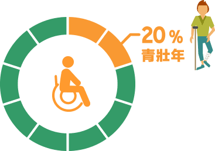
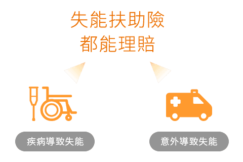
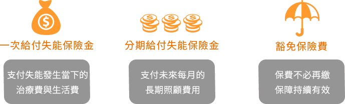
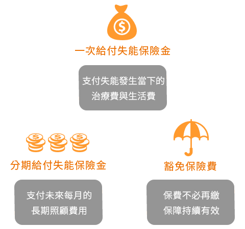

工作、生活、玩樂、休閒，年輕人總是有著無窮的活力與夢想，但年輕不代表擁有風險豁免權。當意外、疾病等風險找上身時，年輕人一樣要面臨高額的治療費用，萬一不幸因意外或疾病嚴重而需他人長期照顧，整體花費的時間恐更長，憑年輕人有限的薪水，恐無力負擔。
每5名身心障礙者中，就有1人為青壯年
依2017年衛福部身心障礙者統計資料顯示，在116萬名身心障礙者中，18～45歲青壯年占比達20％，遠比一般想像得高。而身心障礙前2大原因是「肢體障礙者」與「重要器官失去功能者」，共占44％。

失能扶助險，不怕失能風險長期拖累家庭
若年輕遇上失能、需被長期照護的風險，不僅每月要支付2萬元以上的照顧費用，通常也無力工作，收入中斷拖垮家庭經濟，建議及早準備好保險，才是年輕人最適合用來轉嫁失能、照護風險的絕佳工具。
當保戶因疾病或意外導致失能，只要符合保單相關規定，失能扶助險就能理賠，能適當解決民眾最擔憂的照顧費用或無法工作時的薪資缺口。

失能扶助險，不怕長期照顧拖累家庭


除了以上3大保障，有的失能扶助險更提供滿期金、身故保險金，甚至是交通意外事故失能保險金，讓保障更多元寬廣。